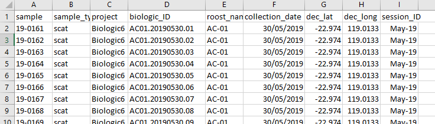
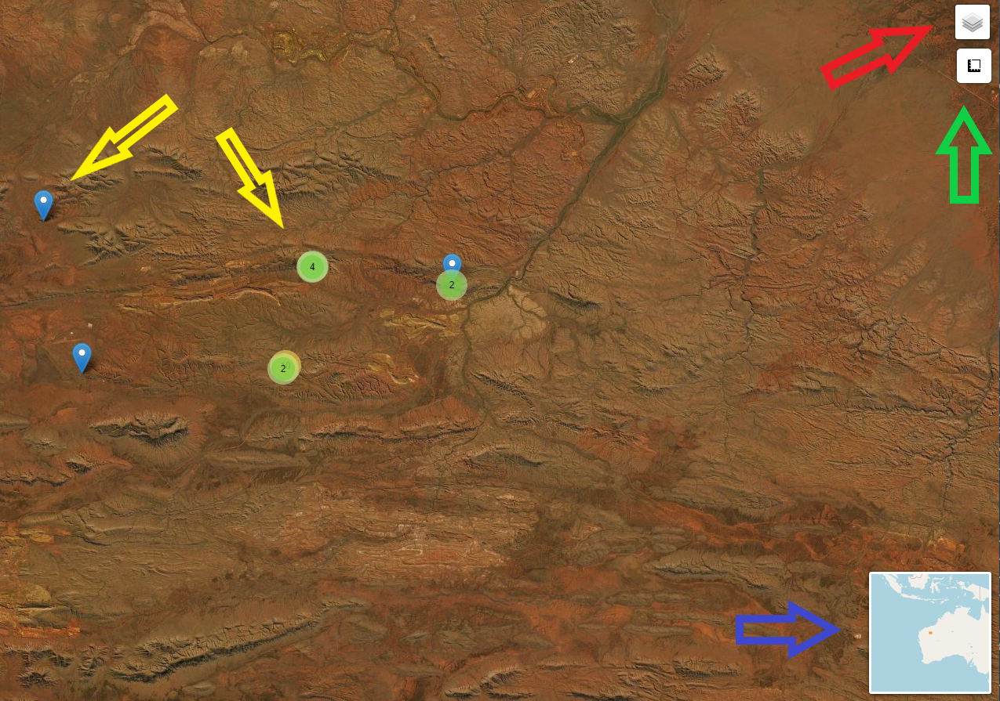

Now that groups have been assigned to the samples, the data can be summarised in various ways:
Exported to “structure” format to make it useful for other software types
Linked to metadata and summarised into various tables:
Sites and individuals are displayed in an interactive leaflet map
As mentioned in the Getting started article, you need to have saved a copy of your metadata csv to the source folder. Without this only item one above can be generated.
The following code exports the group majorities data to csv in structure format.
# export to structure format
structure_format(majorities_csv = "hclust_numerical_mismatch_h4_group_majorities_and_ties.csv")Metadata comes in all types of formats and this largely depends on who collects
the data and what it is collected with. For the summary tables function to work, there are two things that the user needs to ensure:
That the data is in a wide format with each sample represented by one row of data.
That the following information is supplied in columns:
The data should look something like the example shown here.

The information as specified in item 2 above could be named in many different ways
so the user is required provide the column names that align with the parameters. The example below demostrates the parameters used for the metadata as displayed above.
# produce capture history summary tables
summary_tables(groups_csv = "hclust_numerical_mismatch_h4_withGroups.csv",
metadata = "lookup.csv",
prefix = "ID_",
sample = "sample",
site_ID = "roost_name",
field_date = "collection_date",
lat = "dec_lat",
long = "dec_long")The other parameters include the groups csv, the name of the metadata csv and the prefix. The prefix relates to the prefix that is placed in front of the sample name that appears in the groups csv. The user needs to provide this so that when stripped off it will match the sample names in the metadata csv. It should include any underscores or hashes etc. If there is no prefix that needs to be accounted for, empty quotes e.g. "" should be used.
Lastly create a leaflet map. The software that handles the mapping requires all coordinates to be in WGS84. This is the usual default output of most GPS systems. If the map fails or produces unexpected results then this could be the issue. Whoever captured or provided the data should know the coordinate reference system used when logging the data.
The function for the map uses the same parameters as for the summary tables.
# make an interactive map
leaflet_map(groups_csv = "hclust_numerical_mismatch_h4_withGroups.csv",
metadata = "lookup.csv",
prefix = "ID_",
sample = "sample",
site_ID = "roost_name",
field_date = "collection_date",
lat = "dec_lat",
long = "dec_long")The output is shareable, will open in any browser and has a few features apart from being able to pan and zoom.

Red arrow - toggle off and on layers (sites, individuals)
Green arrow - distance and area widget can be used for calculations
Blue arrow - zoomed out location map
Yellow arrows - show sites or locations depending on which layer you are showing. Blue marker is a single entity. Green circle with number indicates multiple records at this location. Zooming in on a green circle will expand the site or locations so all can be interrogated (mouse over) for information.